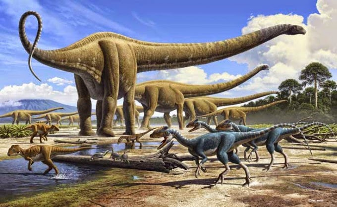

LA EVOLUCIÓN DE LOS DINOSAURIOS
La evolución de los dinosaurios partió de los arcosaurios, hace aproximadamente 232 millones de años en el Ladiniense, en la última parte de la mitad del triásico. Se dice que los primeros dinosaurios fueron carnívoros bípedos, uno de los primeros fósiles encontrados fue de un Eroaptor, medía 1 metros de longitud y se caracterizaba por su cráneo primitivo. Fue entonces en los inicios del periodo jurásico en donde se diversificaron. También a pesar de haber evolucionado de los arcosaurios, los dinosaurios tenían características físicas que los hacían diferentes, entre las más destacadas se encontraba la posibilidad que tenían de mantenerse en pie, además tenían habilidades locomotoras más desarrolladas, esto les permitió dominar el mundo durante millones de años. 
Se han identificado con la ayuda de fósiles evolutivos más de 500 géneros diferentes y 1.000 especies de dinosaurios. A pesar de sus diferencias en tamaño, tenían en común crestas y cuernos, extremidades mantenidas rectas debajo del cuerpo, la puesta de huevos en nidos, existen evidencias de dinosaurios que podían volar o al menos planear y otros de hábitos acuáticos. Probablemente hemos estado más engañados de lo que pensamos, la idea de dinosaurios con escamas que nos ha vendido el cine es un poco equivocada, se cree que esta especie de reptiles, claramente no todas, pero si la mayoría, tenían plumas en su cuerpo. Siéntete en la libertad de imaginarlos y no te limites en pensar que lo que antes era un reptil gigante de plumas, ahora su descendiente es un ave, por ejemplo, una gallina.